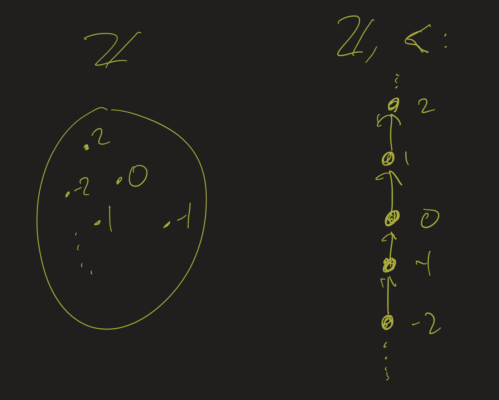
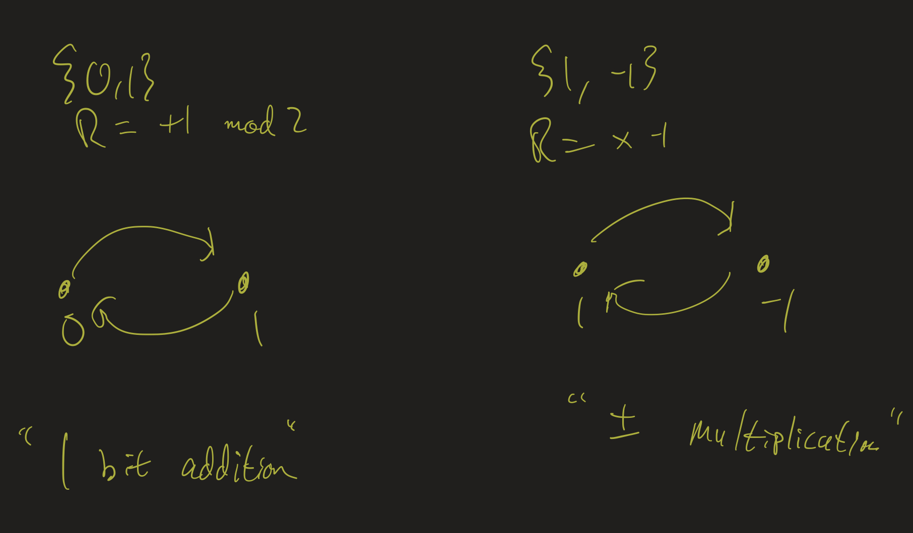
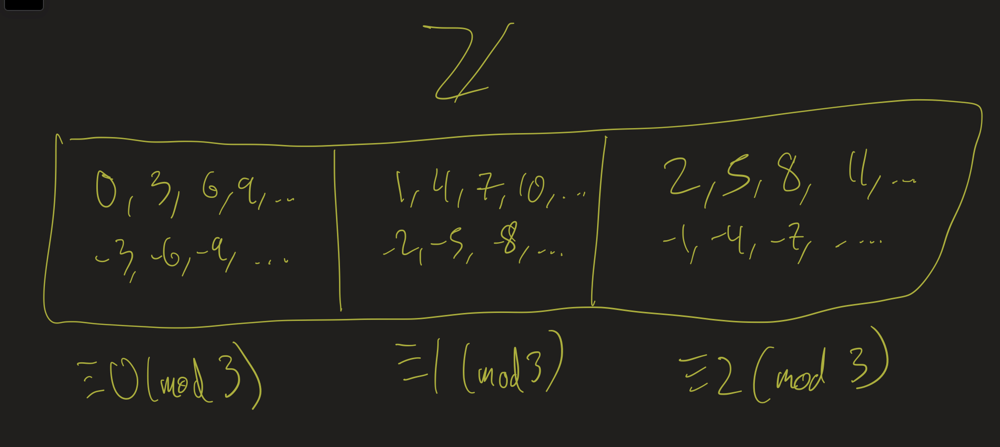
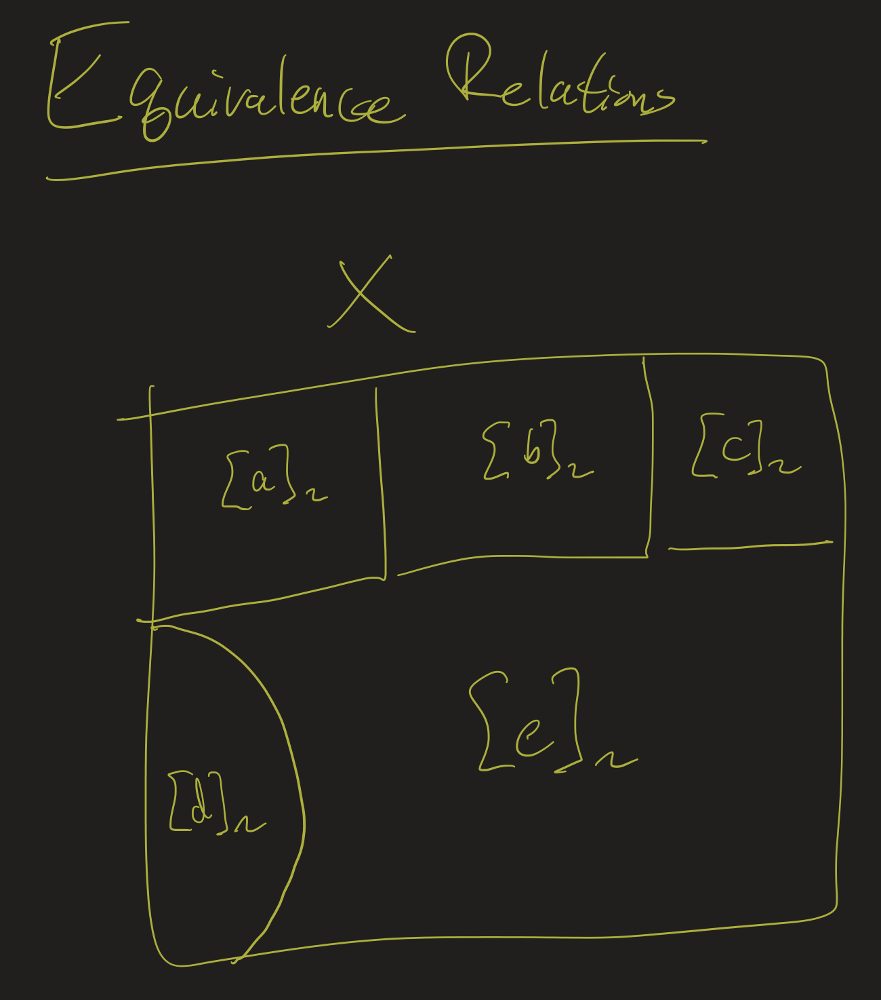

Athar Abdul-Quader
12 November 2020
Spring semester starts February 1. No spring break.
Definition: Let \(X\) and \(Y\) be sets. A binary relation \(R\) from \(X\) to \(Y\) is a subset of \(X \times Y\), that is, a set of ordered pairs \((x, y)\) where \(x \in X\) and \(y \in Y\).
Classical example: \(x, y \in \mathbb{Z}\), \(R\) is \(<\):


Let \(X = \{\) rock, paper, scissors \(\}\). Let \(x \mathrel{R} y\) mean “\(x\) beats \(y\) in a game of rock/paper/scissors”. Describe \(R\) completely:
Let \(X\) be the set of all people. Are the following relations reflexive: \(\forall x (x \mathrel{R} x)\)?
Let \(X\) be the set of all people. Are the following relations symmetric: \(\forall x \forall y (x \mathrel{R} y \rightarrow y \mathrel{R} x)\)?
Are the following relations transitive: \(\forall x \forall y \forall z (x \mathrel{R} y \wedge y \mathrel{R} z \rightarrow x \mathrel{R} z)\)?
Let \(X\) be a set. A relation \(\sim\) on \(X\) is called an equivalence relation if it is reflexive, symmetric, and transitive.
That is, \(\sim\) is an equivalence relation on \(X\) if:
Generalizes:

Let \(X = \mathbb{Z}\), and \(x \sim y\) if \(x^2 = y^2\). Claim: \(\sim\) is an equivalence relation.
Let \(X = \mathbb{R}\), and \(x \sim y\) if \(\sin(x) = \sin(y)\). Claim: \(\sim\) is an equivalence relation.
Representatives?

Recall: \(f(n) = \Theta(g(n))\) if \(f(n) = O(g(n))\) and \(g(n) = O(f(n))\).
If \(f(n) = \Theta(g(n))\) and \(g(n) = \Theta(h(n))\), then \(f(n) = \Theta(h(n))\)?
Let \(X\) be a set, \(\sqsubseteq\) a relation on \(X\). Then \(\sqsubseteq\) is a partial order if it is reflexive, transitive, and anti-symmetric.
That is, \(\sqsubseteq\) is a partial order if:
Generalizes: